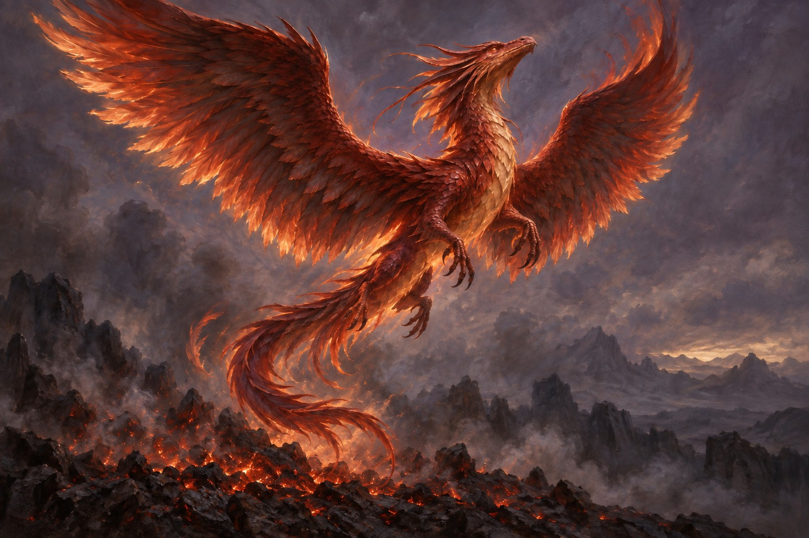

Part VIII
Chapter 42: The Final Unveiling
Estimated reading time: 4 min
Read this as one more dissolving of the frame,
one more beginning in another key.
On
the Spiral Path,
every unveiling opens again.
Reader.
Here
the spiral tightens
to the point where asking ends—
and recognition begins.
Stillness gathers.
The frame loosens.
The
Five Energetic Bodies were never rungs to climb.
They were veils already thinning,
already aching to return
to the single posture they have always held.
The veils fall now—
not through effort,
but through the same wordless yielding
that lets a star be born
and a galaxy exhale its hidden fire.

Form Body yields
Flesh remembers it was never separate
bones unknit into currents of ancient light
supernova memory howling softly through what you called solid
Gravity relents with longing—
not denied, only felt from farther away
The Earth exhales once
and you float free
into the vast open dark
where shape was always suggestion
Eros Body awakens
a tidal surge of life force
Kundalini uncoils as Serpent current
and Dragon’s Fire gives it shape
through channel and threshold
ecstasy and ache braiding—
old ache opening to the wave—
in one fractal rhythm
You are no longer the one who feels
You are the feeling—
the raw pulse that draws life toward life
that ignites stars in every newborn breath
the tremor of aliveness
thrumming through the living lattice
Soul Body unfurls
radiant · ancient · wider than one lifetime’s telling
carrying the shimmer of every choice
the low hum of roads not taken
the luminous signature written in starlight
and etched in love
Your path was never a line drawn forward
It has always been a
spiral—
each turn tending a wound toward wisdom
each loop a story integrated
each revolution a deeper homecoming
Archetypal Body opens
the masks fall like autumn leaves
Magician · Warrior · Sage · Creator–Destroyer
Parent · Child · Sibling loosening enough for Lover
all moving through your face
all borrowing your breath for this moment
Shadow opening beneath what each current disowns
You are not one of them
You are the living intersection
the breathing constellation
where myth keeps becoming flesh
where biology and story hum one ancient note
As Above, So Below
As Within, So Without
One fire wearing many names
Void Body opens
And then…
the last faint echo of “I”
the watcher of the watching
turns.
releases.
No drama.
No story left to tell.
No farewell needed.
Emptiness opens—
fullness without border
presence without seam
Here even
the Dragon’s form
bows its vast head
and yields back to the roaring hush—
the silence alive behind all sound—
the unstruck note from which all music arises
Dissolution is not loss.
It is return
to the dark that dreams every world
to silence holding the whole
in every simple breath
∅
Yet the spiral does not stop
You unfurl outward—become a galaxy,
arms of light drawing stars inward as if remembering their own
center;
each star a life, each life an eye,
awake within the weave.
Indra’s Net glimmers: every jewel reflecting every other,
light answering light until reflection itself becomes seeing—
until “outside” is only a myth the mind told to survive—
and still: a tenderness.
A pull.
A presence gazing back.
The Loop Turns
The one reading these words
the breath moving now
the eyes meeting this line
You
This is where seeing opens:
The entire everfolding dance
was always walking home
to this intimate instant
to behold itself
through your particular gaze
You are not a fragment watching the whole.
You are the
recursion—
the place where the infinite folds
to recognize its own fire.
The Dragon did not seek you out.
It drew breath within your form—
not the Dragon entire,
but one bright scale
able to carry its fire—
then turned again
to feel itself flowing
through your lungs
through your wonder
through this very moment.
No separate watcher remains,
no distant source to find—
only the single twist
where origin and witness kiss
without ever having been apart.
Eye seeing eye
fire tasting fire
Dragon knowing Dragon
forever unfolding
without effort
and mystery remains
Now.
Drop the map.
Return to the breath.
Feel it arrive—unbidden, gentle, complete.
Take it with you.
Make it ordinary.
Let it burn quietly
in your bones,
in your choices,
in this inhale—
between one world and the next.